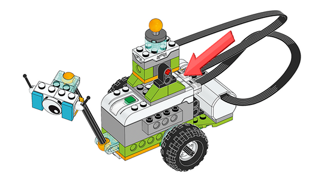

Construir el dispositivo del sensor de inclinación de Milo para enviar un mensaje
Las siguientes instrucciones de construcción amplían la construcción de la parte A del proyecto Primeros pasos. Si los estudiantes han construido un brazo detector de movimiento en la parte B, tendrán que quitarlo para conectar la nueva extensión.
Ayuda para la construcción
Asegúrese de que el sensor de inclinación está conectado al hub inteligente.
